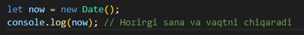
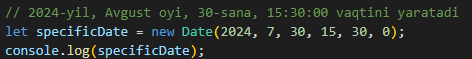
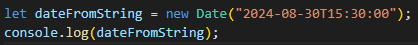

new Date() haqida ma'lumot
JavaScript-da Date obyekti vaqt va sana bilan ishlash uchun ishlatiladi
Date obyekti yaratishning bir nechta usullari mavjud:
Joriy vaqt va sanani olish:
Belgilangan vaqt va sanani yaratish:
Eslatma: Oylar 0 dan 11 gacha sanaladi, ya'ni Yanvar 0, Dekabr esa 11.
Vaqtni millisekundlarda ifodalash
JavaScript-da Date obyekti 1970-yil 1-yanvar UTCdan boshlab o‘tgan vaqtni millisekundlarda o‘lchaydi.
Sana va vaqtni string sifatida yaratish:
Date obyekti bir nechta foydali metodlarga ega bo'lib, ular yordamida vaqt va sana ma'lumotlarini olish va o'zgartirish mumkin.
- getFullYear(): Yilni qaytaradi.
- getMonth(): Oylarni 0 dan 11 gacha qaytaradi.
- getDate(): Sanani qaytaradi (1 dan 31 gacha).
- getDay(): Haftaning kunini qaytaradi (Yakshanba = 0, Dushanba = 1, va hokazo).
- getHours(): Soatni qaytaradi.
- getMinutes(): Daqiqalarni qaytaradi.
- getSeconds(): Soniyalarni qaytaradi.
- getMilliseconds(): Millisekundlarni qaytaradi.
- getTime(): 1970-yil 1-yanvardan boshlab o'tgan vaqtni millisekundlarda qaytaradi.
Sana va Vaqtni Formatlash
- toISOString(): ISO 8601 formatida stringni qaytaradi.
- toDateString(): Faqat sana qismini qaytaradi.
- toTimeString(): Faqat vaqt qismini qaytaradi.
- toLocaleDateString(): Mahalliy sana formatida qaytaradi.
- toLocaleTimeString(): Mahalliy vaqt formatida qaytaradi.
Sana va vaqt ma'lumotlarini o'zgartirish
- setFullYear(year): Yilni o'rnatadi.
- setMonth(month): Oyni o'rnatadi.
- setDate(day): Kun sanasini o'rnatadi.
- setHours(hours): Soatni o'rnatadi.
- setMinutes(minutes): Daqiqalarni o'rnatadi.
- setSeconds(seconds): Soniyalarni o'rnatadi.
- setMilliseconds(ms): Millisekundlarni o'rnatadi.
- setTime(milliseconds): O'tgan millisekundlarni o'rnatadi.
Day Month, Year
Hh
:
Mm
:
Ss